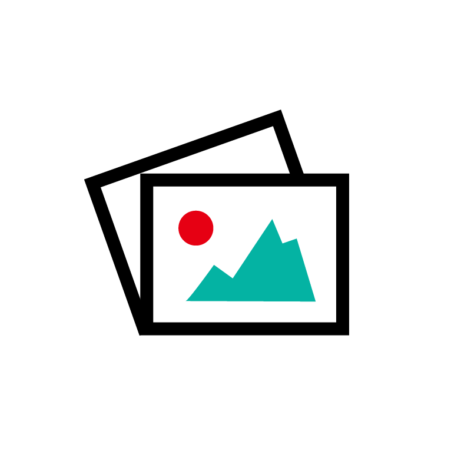

Ontwerp je eigen T-shirt met UTme!
Ontwerp je eigen T-shirt of tas met onze UTme!-service in de UNIQLO Rotterdam winkel. Creëer unieke ontwerpen met foto’s, grappige personages of teksten, ga creatief aan de slag met onze paint-functie of ontdek designs van lokale ontwerpers en partners. Perfect voor een unieke look, om cadeau te doen aan een geliefde, of als matching T-shirts voor school- en bedrijfsuitjes!
Jouw ontwerp
Ontdek de creatieve opties om een uniek T-shirt te creëren.
-

Bekende personages
Kies beroemde personages uit Disney, Snoopy en nog veel meer!
-

Maak je eigen ontwerp met onze paint-functie.
Laat je creativiteit spreken met onze handige paint-functie.
-

Tekst
Personaliseer je ontwerp met een leuke tekst.
-

Foto's
Gebruik je eigen foto's in je ontwerp.
Lokale samenwerkingen
UNIQLO x De Bonte Koe
Chocoladeliefhebbers opgelet! Rotterdamse chocolatier De Bonte Koe – bekend van de viral Dubai reep – en UNIQLO Rotterdam slaan de handen ineen voor een wel heel smakelijke samenwerking. Probeer de chocolade van Bonte Koe uit hun iconische chocolade-automaten en wees de eerste om de limited edition UNIQLO x De Bonte Koe matcha and soy crisp-chocoladereep te bemachtigen. Kun je er niet genoeg van krijgen? Dankzij de unieke samenwerking tussen UTme! en De Bonte Koe kun je jouw liefde voor chocolade uitdragen in de vorm van T-shirts en totebags met exclusieve designs van De Bonte Koe.
De Bonte Koe is een ambachtelijke chocolatier die sinds 1992 handgemaakte chocolade verkoopt, met vestigingen in Rotterdam, Den Haag en Schiedam. Het familiebedrijf maakt gebruik van duurzame en eerlijke ingrediënten, wat je terugproeft in hun hemelse chocoladeproducten.
-
Asifiwe (14), Verenigde Staten/Burundi
Mijn tekening toont mijn vriendengroep van toen ik nog in Burundi woonde. We volgen allemaal een vrienden-code: 'De vriendengroep komt op de eerste plaats en we gaan niet uit elkaar.' Mijn vrienden zijn een bron van kracht en hoop voor me. We zijn misschien van elkaar gescheiden, maar ik weet zeker dat we in ons hart samen zijn en dat onze herinneringen zullen blijven voortleven.
-
Afya (14), Verenigde Staten
Het hartvormige papieren vliegtuigje is van een belangrijk persoon. Het kan een beetje hoop en optimisme naar iemand aan de andere kant van de wereld sturen, ondanks dat ze niet thuis zijn.
-
Virag (28), Hongarije
Ik heb veel inspirerende asielzoekers en vluchtelingen ontmoet en weet hoe belangrijk ‘HOPE AWAY FROM HOME’ is om je leven in een nieuwe omgeving weer op te bouwen. Mijn tekening symboliseert het najagen van deze hoop, en het hart laat zien dat het heel goed mogelijk is om je dromen te volgen, zelfs als je ver van huis bent.
-
Mawardi (20), Somalië
De lucht en de maan symboliseren bescherming en eenheid. Ondanks onze verschillen zijn we allemaal onder de hemel en delen we één maan, het maakt niet uit waar je bent, er is maar één maan en je wordt beschermd door de lucht. Ik wil president worden omdat ik geloof dat ik de kracht zal hebben om beslissingen te nemen die mensen niet zullen schaden; de kracht om alle oorlogen in de wereld te beëindigen.
FAQs
Hoe lang duurt het proces?
Het proces van printen tot persen duurt ongeveer cinq minuten.
Kan ik mijn eigen foto's gebruiken?
Er is een optie om een QR-code te scannen, waarmee je foto's van je mobiele apparaat kunt uploaden.
Waar op het t-shirt komt mijn ontwerp te staan?
Designs kunnen alleen op de voorkant van T-shirts worden gedrukt.
In welke winkels is UTMe! Beschikbaar?
Onze UTme! service is alleen beschikbaar in de UNIQLO Rotterdam winkel, te Lijnbaan 177.